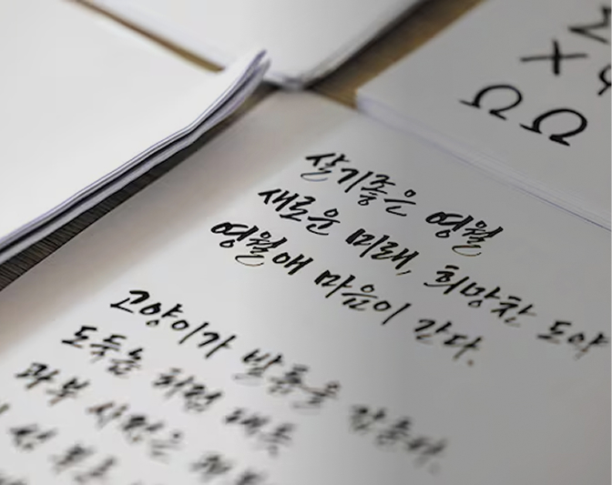

도시브랜드 연구소
"영월 고유의 정체성, 지역 환경과 문화·역사 담아 글꼴로"
"동강과 서강의 유려한 물결, 요선암과 한반도지형 같은 영월의 자연이 서체의 세계관이 됐습니다. 지역의 환경과 문화, 역사를 담은 영월 고유의 정체성을 표현한 글꼴입니다."
영월군의 손 글씨 서체 '영월체'가 나왔다. 지역의 감성과 풍광을 오롯이 담은 서체로, 글꼴 디자이너 강병호 도시브랜드연구소 대표가 개발했다. (...)
read more +